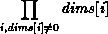
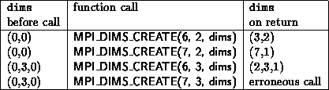

For cartesian topologies, the function MPI_DIMS_CREATE helps the user select a balanced distribution of processes per coordinate direction, depending on the number of processes in the group to be balanced and optional constraints that can be specified by the user. One use is to partition all the processes (the size of MPI_COMM_WORLD's group) into an n-dimensional topology.
MPI_DIMS_CREATE(nnodes, ndims, dims)
[ IN nnodes] number of nodes in a grid (integer)
[ IN ndims] number of cartesian dimensions (integer)
[ INOUT dims] integer array of size ndims specifying the number of nodes in each dimension
int MPI_Dims_create(int nnodes, int ndims, int *dims)
MPI_DIMS_CREATE(NNODES, NDIMS, DIMS, IERROR)
INTEGER NNODES, NDIMS, DIMS(*), IERROR
The entries in the array dims are set to describe a cartesian grid with ndims dimensions and a total of nnodes nodes. The dimensions are set to be as close to each other as possible, using an appropriate divisibility algorithm. The caller may further constrain the operation of this routine by specifying elements of array dims. If dims[i] is set to a positive number, the routine will not modify the number of nodes in dimension i; only those entries where dims[i] = 0 are modified by the call.
Negative input values of dims[i] are erroneous. An error will occur if nnodes is not a multiple of  .
For dims[i] set by the call, dims[i] will be ordered in non-increasing order. Array dims is suitable for use as input to routine MPI_CART_CREATE. MPI_DIMS_CREATE is local.
Example
